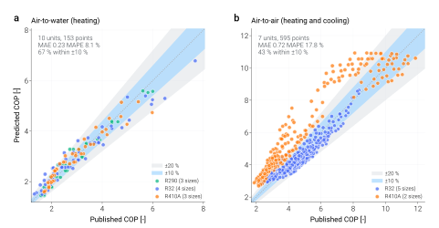
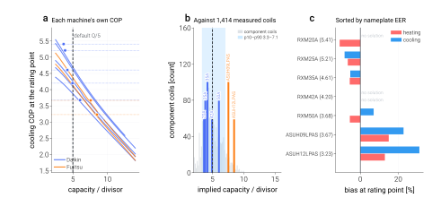

Validation¶
A physics-based model is only useful if its first-principles answers land close to the real machines it is meant to describe. This page is that check.
The harder question is whether it keeps landing close when the machine changes. A model tuned to one unit will match that unit; what tells you something is whether the same defaults, unchanged, follow a different refrigerant, a different size, and a different equipment architecture.
How to read these numbers
Nothing here is fitted to anything here. Every unit is run with the library defaults exactly as shipped. The only per-unit inputs are values the manufacturer publishes about the machine itself — nameplate capacity, refrigerant, and, where the manufacturer publishes them at all, compressor displacement and rated air flow. Those have the same status as the nameplate: specification, not tuning. Where the evidence for a default came from is a separate page, Where the defaults come from.
Points the model could not evaluate are reported, not dropped. The counts below distinguish points attempted from points evaluated, and the interactive table shows each unevaluated point with its reason.
Parity¶


Predicted against published COP. Colour is refrigerant, marker size is nominal capacity. A model quietly tuned to one unit would show one tight cluster on the diagonal and the rest scattered.¶
Dimension |
Span |
|---|---|
Families |
Air-to-water ( |
Refrigerants |
R32, R410A, R290 |
Nominal capacity |
2.0 – 16.0 kW, a factor of eight |
Manufacturers |
Panasonic, Samsung, Daikin, Fujitsu |
Points |
757 attempted, 753 evaluated |
Modes |
Heating and cooling |
Source temperature |
−20 to +40 °C |
Sink temperature |
15 to 65 °C leaving water / indoor dry bulb |
Per-unit results¶
Sort by any column, filter by unit, refrigerant or mode. The numbers come from
validation/results/, which the parity harness writes.
Reading the residuals¶
There is no single headline number: the set mixes two rating standards
(EN 14511 and AHRI 210/240) that define COP differently, so the harness reports
one figure per standard and pools nothing across them. Over 753 evaluated points
the adopted catalogues come to a COP MAPE of 8.9 %; the two held catalogues are
run and written but never enter a headline. The compressor coefficients are
version v2026-09-24 (Where the defaults come from), fitted on standalone compressor data
and applied here unchanged.
Group |
COP MAPE |
Bias |
What it is |
|---|---|---|---|
Air-to-water, 10 units |
8.2 % |
+1.5 % |
Scatter, centred (rating standard not stated) |
Air-to-air, Daikin, 5 units |
9.2 % |
−0.0 % |
Scatter, centred (EN 14511) |
Air-to-air, Fujitsu, 2 units |
30.3 % |
+28.8 % |
Held: AHRI 210/240, COP boundary not stated — a uniform offset |
A bias equal to the error is the signature of a systematic cause, so the Fujitsu result was checked before being published rather than after.
The offset is three things, not one
An earlier version of this page attributed the whole gap to hardware efficiency. That was one of three causes presented as the explanation, and this is the correction. Comparing each machine at its own nominal rating point – no latent load, no forced maximum output, the cleanest comparison available – separates them.
① Residual hardware efficiency (~20 points). At the nominal heating rating point Daikin lands 6-11 % low and Fujitsu 13-15 % high. That part is real and it is the defaults’ responsibility: the two product lines are built to different efficiency targets and a rule written per kilowatt cannot tell which one it is looking at.
② Dehumidification, cooling half. TMHP’s indoor coil is a dry sensible exchanger. A real machine removing moisture must hold its coil below the dew point, far colder than a sensible-only coil needs to move the same total heat — and a colder coil means more lift and less COP. At its rating point the Fujitsu removes 34 % of its duty as latent heat (SHR 0.66) against the Daikin’s 2 % (SHR 0.98). Within the Daikin set alone, bias correlates with sensible heat ratio at r = −0.52.
③ Maximum-capacity tables, heating half. Fujitsu’s heating grid is published at maximum capacity, with the compressor pinned at full speed where its efficiency is worst. The harness asks for that same duty and the model meets it at about half the available speed range. Different operating point; the comparison flatters the model.
Only ① is a property of the defaults. ② is a stated model boundary and ③ is a property of the source document.
Where each machine sits in the measured band
Backing the conductance out of each machine’s own rating point — “if the whole residual were conductance, how much would it be?” — places each one against the population the default came from.
Unit |
Nameplate EER |
Implied rule |
In the band? |
|---|---|---|---|
FTXM20A / RXM20A |
5.41 |
Q/3.7 |
inside |
FTXM25A / RXM25A |
5.21 |
Q/3.9 |
inside |
FTXM35A / RXM35A |
4.61 |
Q/4.2 |
inside |
FTXM42A / RXM42A |
4.20 |
Q/4.9 |
inside |
FTXM50A / RXM50A |
3.68 |
Q/6.0 |
inside |
ASUH09LPAS |
3.67 |
Q/7.6 |
outside |
ASUH12LPAS |
3.23 |
Q/8.5 |
outside |
The band is Q/3.3 to Q/7.1 at p10–p90 of 1,414 component coils, on the
nameplate-capacity basis, and the default Q/5.0 sits inside it. Every
Daikin unit is inside. Both Fujitsu units sit just outside the
low-conductance end: they behave like machines with less coil per kilowatt
than 90 % of the component population, which is exactly why a median
default over-predicts them.
Note
The band must be quoted on the same basis as the rule. Component
catalogues report conductance per unit of coil duty; the rule is
written against the nameplate, and the two differ by 1 + 1/EER
= 1.307. An earlier version of this page carried the median across but
not the band, which made the default look better placed in its own
population than it is.


Reproduce with uv run python -m validation.analysis.residual_decomposition
and uv run python -m scripts.validation.residual_figure.¶
Why the default was not moved
Nudging the conductance from Q/5 toward Q/6 would have improved the
aggregate number on this page. It was not done. The value was derived from
the catalogue population before any parity result existed, and changing it
afterwards to improve a parity plot is calibration wearing validation’s
clothes — the exact thing this harness is built to prevent. The spread is
reported instead.
Three smaller patterns, also named rather than left for a reader to find:
The air-to-water set is the tighter one. Those units publish compressor displacement, which no air-to-air unit in the set does — neither Daikin nor Fujitsu prints one, and a search of five data books, three service manuals and two specification sheets found no displacement for any of them. So the air-to-air panel is also a test of the derived displacement rule rather than of a specification input.
Both air-to-air refrigerants are present for a reason. Daikin’s pair-application range is entirely R-32. Without the Fujitsu R-410A units that panel would say nothing about whether the physics carries across working fluids. It is worth being explicit that the offset above is not a refrigerant effect: the three R-410A air-to-water units are among the best fits in the whole set, at 4.7 to 7.9 % MAPE.
The one air-to-water outlier turns out to be the same story. The 16 kW R32 unit runs +11.7 % optimistic. Neither of its published inputs explains it: substituting its sibling’s rated air flow, or dropping its published displacement in favour of the derived rule, moves the bias by about a point. What explains it is the catalogue itself. At every one of the fifteen conditions, the 16 kW machine’s published COP is 8 to 22 % below the 9 kW machine’s from the same product line:
Condition |
9 kW |
12 kW |
16 kW |
16 kW / 9 kW |
|---|---|---|---|---|
−7 °C / 45 °C |
2.54 |
2.39 |
2.04 |
0.80 |
+2 °C / 55 °C |
2.54 |
2.42 |
2.07 |
0.82 |
+25 °C / 45 °C |
5.99 |
5.71 |
5.00 |
0.84 |
Efficiency is not constant per kilowatt as you go up a product line, and a rule written per kilowatt cannot know that. The model treats the three units as near-identical machines at different sizes, which is what the rules say; the manufacturer’s own data says the largest is about 16 % worse. The residual is that gap.
This is the Fujitsu finding again at smaller scale and inside a single manufacturer’s range, which is worth noticing: the limitation is not one unusual product line, it is capacity-normalised scaling itself. The defaults describe a typical machine of a given size; they do not know that a manufacturer’s 16 kW model is built to a different cost target than its 9 kW model.
The Samsung high-temperature unit is genuinely outside the model boundary. It publishes no displacement and reaches 65 °C leaving water at −10 °C outdoor air — a pressure ratio around 16, which real machines achieve with vapour injection and TMHP does not model as a single-stage cycle. Stated rather than corrected for.
Note
An earlier published figure for the Samsung unit — MAE 0.35, MAPE 10.1 % — came from a parameter set written for that machine, including its own displacement, conductances and efficiency coefficients. It is not comparable to the number here, which is the shipped defaults applied without adjustment. Removing that divergence between the published validation script and the library default is part of what this work did.
Cooling and latent load¶
TMHP’s indoor coil is a dry sensible-heat exchanger. Manufacturer cooling grids publish total capacity, part of which is dehumidification, so a cooling point with a low sensible heat ratio asks the model to carry a latent duty it does not compute. Each cooling point in the catalogue files records its sensible heat ratio for this reason. Heating points have no latent component.
Scope¶
What has and has not been benchmarked
AirSourceHeatPumpBoiler and AirSourceHeatPump are benchmarked
against manufacturer catalogues here. The ground-source and water-source
families (GroundSourceHeatPumpBoiler,
WaterSourceHeatPumpBoiler,
GroundSourceHeatPump, and the
subsystem-augmented variants) share the same refrigerant-cycle core and
pass smoke tests on representative operating points, but have not been
compared against unit-specific data. The conductance rule derived here is
for air coils and does not transfer to a water- or brine-coupled face,
which is different physics.
GroundSourceHeatPump additionally still carries a fixed compressor
displacement rather than the derived rule, and is not covered by the
displacement work on this page.
Reproduce¶
uv sync --locked --group validation
uv run python -m validation.parity.run # every catalogue
uv run python -m scripts.validation.parity_figure # this figure
Adding a machine is a transcription and nothing else — see Adding a catalogue.
Citations¶
Jo, H. & Choi, W. “Thermodynamic Modeling of Refrigerant Cycle in an Air-Source Heat Pump Boiler and Performance Validation”, KJACR (2026, in press).
Samsung Electronics, EHS Mono HT Quiet R32 Technical Data Book (2024).
Panasonic, Aquarea WH-MXC / WH-WXG / WH-UQ service manuals and compressor catalogues (2025).
Daikin, RXM-A engineering data book, EEDEN24-200.
Full provenance, with checksums, is in validation/registry/sources.yaml.